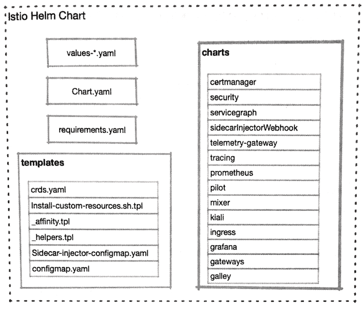

第四节 用Helm部署Istio
Istio 是由多个组件构成的，井且可以通过 kubectl 命令在Kubernetes集群上进行部署，部署时会在Kubernetes集群上创建大量的对象。Istio与Kubernetes进行了深度集成，构成Istio的各个组件都以Deployment 的形式在Kubernetes集群中运行，并且其在运行过程中所需的配置数据也需要依赖各种CRD及ConfigMap、 Secret等来进行存储。这种包含复杂依赖关系的应用部署 过程，需要由功能足够强大的模板系统提供支持，因此Istio官方推荐使用Helm对Istio进行部署。
本章将会较为详细地对一Istio的Helm Chart部署方式进行讲解。
1、Istio Chart概述
Helm是目前Istio官方推荐的安装方式。除去安装后，我们还可以对输人值进行一些调整，完成对Istio的部分配置T作。Istio Chart是一个总分结构，其分级结构和设计结构是一致的.
Istio中Chart的分级结构和目录结构是对等的，下面进行简要说明。
1-1 Chart.yaml
该文件是Chart的基础信息文件，其中包含版本号、名称、关键字等元数据信息。

1-2 values一*.yaml
在Istio的发行包中包含一组values文件，提供Istio在各种场景下的关键配置范本，这些范本文件可以作为Helm的输入文件，来对Istio进行典型定制。对Istio的定制可以从对这些输人文件的改写开始，在改写完成后使用helm template命令生成最终的部署文件，这样就能用kubectl完成部署了。
- 下面列举这些典型输人文件的作用。
values_istio_auth-galley.yaml：启用控制面mTLS,默认打开网格内部的mTLS, 启用Galley values-istio-multicluster.yaml：多集群配置。values-istio-auth-multicluster.yaml：多集群配置，启用控制面mTLS，默认打开网格内部的mTLS禁用自签署证书 。values-isito-demo-auth.yml: 启用控制面mTLS默认打开网格内部的mTLsvalues-istio-auth.yaml: 启用控制面mTLS默认打开网格内部的Grafana,JaegerServiceGraph及Galley,允许自动注入values-istio-galley.yaml: 启用Galley和Prometheusvalues-istio-gateways.yaml: 这是一个样例可以用这种形式定义新的Gateway。values-istio-one-namespace.yaml: 单命名空间部署, 默认打开网格内部的mTLSvalues-istio-one-namespace-auth.yaml: 单命名空间部署， 启用控制面mTLSvalues.yaml: 罗列了绝大多数常用变量，也是我们做定制的基础
1-3 requirements.yaml
该文件用于管理对子Chart的依赖关系，其中定义了一系列开关变量。
在Helm的输人内容中对相关变量进行定义，就可以对Istio的部署文件进行修改，来控制对应组件的启用状态。例如，其中有一段对Grafana的控制代码：
- name: grafana
version: 1.0.3
condition:grafana.enabled
这段控制代码代表：如果修改全局变量grafana.enabled为False,就不会安装Grafana了。
1-4 template/_affinity.tpl
该文件会生成一组节点亲和或互斥元素，供各个组件在渲染YAML时使用该文件里使用了一系列变量，用于控制Istio组件的节点亲和性（也就是限制在部署时对节点的选择。
在模板中引用了全局变量arch，默认内容是：
arch:
amd64:2
s390x:2
ppc64le:2
这里定义如下两个局部模板：
nodeAffinityRequiredDuringScheduling：会根据全局变量中的arch参数对部署节点进行限制。Istio组件的Pod会根据arch参数中的服务器类型列表来决定是否部署到某一台服务器上，并根据各种服务器类型的不同权重来决定优先级。nodeAffinityPreferredDuringScheduling：跟上一个变量的作用类似，不同的是，这一个软限制。
接下来会使用在上面定义的两个模板生成新模板，将其命名为nodeaffinity，并提供给其他组件引用，用于生成各个组件Deployment对象的节点亲和性限制。
1-5 templates/sidecar-injector-configmap.yaml
根据文件名就可以判断出来，该文件最终会用于生成一个ConfigMap对象，在该对象中保存的配置数据被用于进行Sidecar注入。
istioctl完成的手工注人，或者 Istioctl 的自动注人，都会引用这个ConfigMap，换句话说，如果希望修改Istio的Sidecar的注人过程及具体行为，就可以从该文件或者对应的ConfigMap人手了。
1-6 templates/configmap.yaml
该文件也会生成一个ConfigMap，名称为istio，这个对象用于为Pilot提供启动配置数据。
1-7 templates/crds.yaml
该文件包含了Istio所需的CRD定义，它的部署方式较为特殊：
- 如果使用
Helm 2.10之前的版本进行安装，则需要先使用kubectl提交该文件到Kubernetes集群中； - 如果使用
Helm 2.10之后的版本，则其中的Helm hook会自动提前安装，无须特别注意。
1-8 charts
这个目录中的子目录就是Istio的组件，如下所述。
certrnanager：一个基于Jetstack Cert-Manager项目的ACME证书客户端，用于自动进行证书的申请、获取及分发。galley:Istio利用Galley进行配置管理工作。gateways：对Gateways Chart进行配置，可以安装多个Gateway Controller,grafana：图形化的Istio Dashboardingress：一个遗留设计，默认关闭，在流量控制协议升级到network.istio.io/vlalpha3之后，已经建议弃用。kiali：带有分布式跟踪、配置校验等多项功能的Dashboard。mixer:Istio的策略实施组件。pilot:Istio的流量管理组件。prometheus： 监控软件Prometheus,其中包含Istio特定的指标抓取设置。security:Citadel组件，用于证书的自动管理servicegraph：分布式跟踪组件，用于获取和展示服务调用关系图，即将废除sidecarInjectorWebhook: 自动注人Webhook的相关配置；tracing：分布式跟踪组件，使用Jaeger实现，替代原有的Service Graph组件。
2、 charts全局变量介绍
我们在使用现有Chart的时候，通常都不会修改Chart的本体，仅通过对变量的控制来实现对部署过程的定制。Istio Helm Chart提供了大量的变量来帮助用户对 Istio的安装进行定制。
Istio Chart分为父子两层，因此变量也具有全局和本地两级。 全局变量使用保留字global 进行定义，子Chart可以通过Values.global的方式引用全局变量，而在主Chart中也可以用chart.var的方式为子Chart指定变量值。
2-1 hub和tag
在多数情况下，这两个变量代表所有镜像的地址，具体名称一般以 ｛{ .Values. global.hub}}/[component]/:{{ .Values.global.tag }｝ 的形式拼接而成。
在 proxy_init、Mixer、 Grafana 和 Pilot的Deployment模板中,
一旦在其image变量中 包含路径符“/",则会弃用global.hub，直接采用image的定义，
代码如下：
{{- if contains "/" .Values.image }}
image: "{{ .Values.image }}"
{{- else }}
image: "{{ $.Values.global.hub }}/{{ $.Values.image }}:{{ $.Values.global.tag }}"
{{- end }}
这两个变量对于内网部署是非常有必要的，将istio的镜像拉取回来，井推送至私库之后．只要在Values.yaml 中进行修改、就可以将Istio所需镜像的引用指向内网私库．省去了逐个修改Deployment文档的麻烦
2-2 ingress.enabled
这个开关用来控制是否启用Istio 的Ingress Controller.
如果这个值被设置为True 就会启用时Kubernetes Ingress资源的支持，这是一个兼容的功能
2-3 Istio并不推荐 ingress的使用方式，建议使用Ingress Gateway, 取而代之
有两个变量会受到这个开关的影啊，这两个变量分别是k8sIngressSelector和 k8sIngressHttps 只有在ingress.enabled被设置为True的情况下，这两个变量的相关内容才会生效。
k8sIngresSelector会利用Pod标签选择一个Gateway，作为Ingress Controller- 如果将
k8sIngressHttps变量赋值为True，就会在istio-autogenerated-k8s-in gress这个Gateway定义中加入443端口及其TLS配置.
k8sIngressHttps的相关引用对Ingress Gateway Pod的/etc/istio/ingress/certs／下的证书文件有依赖．
因此需要启用这一选项：需要把ingress.enabled设置为true。
- 从而成功创建
ingress Chart的Deployment； - 还需要创建一个被命名为
Ingress-certs的tls secret给istio-ingress Deployment进行加载。如果没有满足这些条件，LDS就会拒绝服务，从而无法提供Ingress功能.
2-4 Proxy相关参数
在values.yaml中定义一组Proxy变量, 用于对Sidecar进行控制。
1.proxy.resources
用于为Sidecar分配资源。用户可以根据业务Pod的负载情况, 为Sidecar指定CPU和内存资源。
2.proxy.concurrency
Proxy worker 数量进行分配。如果被设置为0（默认值），则根据CPU线程或核的数量进行分配。
3.Proxy.accessLogFi1e
Sidecar的访问日志位置。 如果被设置为空字符串，则关闭访问日志功能。默认值为/dev/stdout。
4. proxy.privileged
istio-init、istio-proxy的特权模式开关。默认值为false。
5.Proxy.enableCoreDump
如果打开, 则新注人的Sidecar会启动CoreDump功能， 在Pod中加人初始化容器
enable-core-dump默认值为false
6.proxy.includeIPRanges
劫持IP范围的白名单。默认值为“*"，也就是劫持所有地址的流量。
在sidecar-injector-configmap.yaml中应用了这一变量，用于生成istio-sidecar-injector这个ConfigMap，这个ConfigMap设置了istio-init的运行参数，通过对istio-init的"-i”参数进行修改来完成这一任务。
7. Proxy.excludeIPRanges
劫持IP范围的黑名单。默认值为空字符串, 也就劫持范围以外的IP。同proxy.includeIPRanges 的情况类似。它影响的是istio-init的-x参数
8.Proxy.includeInboundPorts
入站流量的端口劫持白名单。所有从范围内的端口进入Pod的流量都会被劫持。它影响的是istio-init的"-b"参数
9.proxy.excludeInboundports
入站流量的端口劫持黑名单。这一端口范围之外的入站流量才会被劫持。 它影响的是Istio-init的“-d”参数。
10.proxy.autoInject
用于控制是否自动完成Sidecar的注入工作。
11. proxy.envoyStatsd
该变量的默认值如下。
enabled:truehost:istio-statsd-prom-bridgeport:9125
它会设置Envoy的“--statsdUdpAddress”参数，在某些参数下（例如没有安装 Mixer）可以关闭。
2-4 proxy_init.image
网格中的服务Pod在启动之前，首先会运行一个初始化镜像来完成流量劫持工作，这个变量可以用于指定初始化容器镜像。
2-5 imagePullPolicy
镜像的拉取策略。默认值为“IfNotPresent".
2-6 controlPlaneSecurityEnabled
指定是否在Istio控制面组件上启用mTLS通信。
在启用之后，Sidecar和控制平面组件之间，以及控制平面组件之间的通信，都会被改为mTLS方式。受影响的组件包括Ingress. Mixer, Pilot及Sidecar.
2-7 disablePolicyChecks
如果把这个开关变量设置为true，则会禁用Mixer的预检功能。预检功能是一个同步过程，有可能因为预检缓慢造成业务应用的阻塞。
2-8 enableTracing
是否启用分布式跟踪功能，默认值为true
2-9 mtls.enabled
所有服务之问的通信都会使用mTLS进行安全加固。需要注意的是，这一变量的设置是全局的，对于每个服务还以单独使用目标规则或者服务注解的方式，自行诀定是否采用mTLS加固
2-10 imagePullSecrets
用于为ServiceAccount分配在镜像拉取过程中所需的认证凭据。默认值为空值
2-11 arch
在设置Istio组件的节点亲和性过程中，会使用这一变量的列表内容来确定可以用于部署的节点范围，并按照不同的服务器架构设置了优先顺序。它的默认列表内容如下：
amd64:2s390x:2ppc64le:2
2-12 oneNamespace
默认值为false, Pilot会监控所有命名空间内的服务变化如果这个变量被设置为true，则会在Pilot的服务发现参数中加入"-a", 在这种情况下，Pilot只会对Istio组件所在的命名空间进行监控。
2-13 configValidation
用于配置是否开启服务端的配置验证。默认值为true. 该选项在开启之后， 会生成一个ValidatingWebhook Configuration 对象，并被包含到Galley的配置中，从而启用校验功能。
2-14 meshExpansion
要将服务网格扩展到物理机或者虚拟机上，就会使用到这一变量。默认值为false 如果被设置为true，则会在Ingress Gateway上公开Pilot和Citadel的服务。
2-15 meshExpansionILB
是否在内部网关中公开Pilot和Citadel的端口。
默认值为false，仅在服务网格扩展时会使用到这一变量。
2-16 defaultResources
为所有Istio组件都提供一个最小资源限制。在默认情况下，只设置一个请求10m Cpu资源的值。可以在各个Chart的局部变量中分别设置资源需求。
2-17 hyperkube
在Istio的设置过程会使用一个镜像执行一些Job，例如在早期版本安装过程中的CRD初始化，或者现在的清理过期证书等任务。这个镜像默认使用的是 quay.io/coreos:v1.7.6_coreos.0，在内网中同样可以对其进行覆盖。
2-18 priorityClassName
Kubernetes在1.11.0以上版本中提出了PriorityClass的概念，具有优先级的Pod
不会被驱逐或抢占资源。该变量的默认值为空，可选值包括“system-cluster-critical" 和"system-node-critical"。
2-19 crds
该变量用于决定是否包含CRD定义。如果使用helm template命令，或者是2.10以土版本的helm install命令，则应该将其设置为true;
否则在安装之前首先要执行 kubectl apply -f install/kubernetes/helm/istio/templates/crds.yaml，并将该变量设置为 false。
3、Istio 安装清单的生成和部署
3-1 编辑values.yaml
我们需要先根据实际需求对Istio进行定制，values.yaml。最常见的修改包含以下内容。
- 镜像地址
如果是内网部署，那么需要先解决镜像地址问题。我们通常会在具备外网连接条件的服务器上拉取所需镜像，然后导出镜像，将其推送到本地私有镜像库。那么， 如何知道我们需要哪些镜像？
我们可以grep istio-demo.yaml
$ cd Istio/istio-1.1.16/install/kubernetes
$ grep -r image: istio-demo.yaml | egrep -o -e "image:.*" | sort | uniq
image: "docker.io/istio/citadel:1.1.16"
image: "docker.io/istio/galley:1.1.16"
image: "docker.io/istio/kubectl:1.1.16"
image: "docker.io/istio/kubectl:1.1.16"
image: "docker.io/istio/mixer:1.1.16"
image: "docker.io/istio/pilot:1.1.16"
image: "docker.io/istio/proxy_init:1.1.16"
image: "docker.io/istio/proxyv2:1.1.16"
image: "docker.io/istio/sidecar_injector:1.1.16"
image: "docker.io/jaegertracing/all-in-one:1.9"
image: "docker.io/kiali/kiali:v0.16"
image: "docker.io/prom/prometheus:v2.3.1"
image: "grafana/grafana:6.0.2"
image: [[ annotation .ObjectMeta `sidecar.istio.io/proxyImage` "docker.io/istio/proxyv2:1.1.16" ]]
在得到这些镜像名称之后，就可以逐个进行镜像的拉取和推送操作了。
接下来根据私库地址，修改values.yaml中各个镜像的地址，生成新的安装清单文件，然后重新用上述命令进行检查即可。
3-2 系统资源
Values.yaml中的系统资源设置是非常保守的，并且不够完整，因此这里建议根据实际隋况调整各个组件的资源分配。
3-3 服务类型
Istio的Istio-ingressgateWay服务的默认类型是Loadbalancer，如果在要部署的
目标Kubernetes集群中没有负载均衡支持，就需要对服务类型进行修改了
3-4 可视化组件的服务开放
在Istio中包含了Prometheus, Grafana及Kiali等可视化组件，在默认状态下都是ClusterIP类型的，要顺利使用，则可能需要为其分配Ingress或者修改服务类型。
4、生成部署清单
在完成对values.yaml 的编辑之后，就可以使用helm template命令来生成最终的 \部署清单文件了，例如我们生成的输人文件为my-values.yaml，那么可以用如下命令生成我们需要的YAML文件：
$ helm template install/kubernetes/helm/istio \
--namespace istio一system \
-f my-values.yaml>my-istio.yaml
这个命令假设我们的当前目录是Istio发行包的根目录，其中：
"--name istio”代表生成的部署内容的基础名称为“istio";"--namespace istio-system”代表将Istlo部署到命名空间 "istio-system”中；"-f my-values.yaml”代表从my-values.yaml文件中获取输人的内容。
该命令在执行完毕之后，会生成部署清单文件my-istio.yaml，可以打开该文件，检查其中的内容是否符合预期。
5、部署Istio
在部署清单生成并检查完毕之后，就可以开始部署了。
我们生成的my-istio.yaml是要求部署到istio-system命名空间的，所以这里使用kubectl命令来创建它：
$ kubectl create ns istio-system
namespace/istio-system created
kubectl apply -f my-istio.yaml
configmap/istio-galley-configuration created
configmap/istio-statsd-prom-bridge created
configmap/prometheus created
configmap/istio-security-custom-resources created
等运行结束之后，同样可以使用“kubecti get po -n istio-system -w”命令来查看 Pod的运行情况，直到全部Pod成功进人Running或者Completed状态，Istio的安装部署工作就完成了。
6、小结
Helm还有一种常见的部署方式，就是通过helm install命令进行部署。但是，采用这种部署方式时，需要在Kubernetes中部署Tiller：服务端，而且不会生成部署清单文件，这对于配置管理来说是很不方便的，因此这里不做推荐。
另外，在Helm的template或者install命令中，可以通过“--set”的方式来设置
变量值。这里没有提及这种方式，原因很简单：Istio部署过程中涉及的变量太多，命令行方式更显笨重。